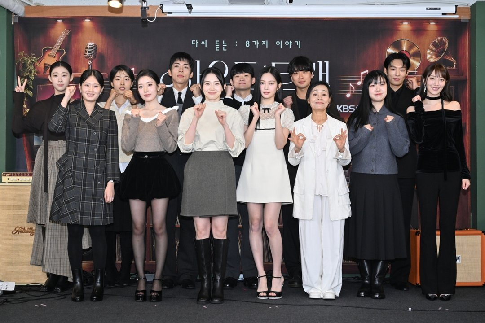
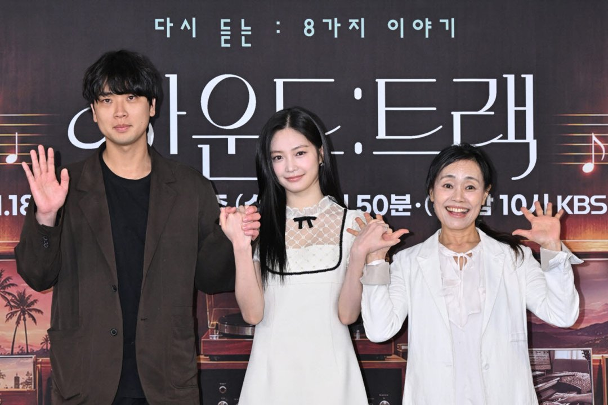
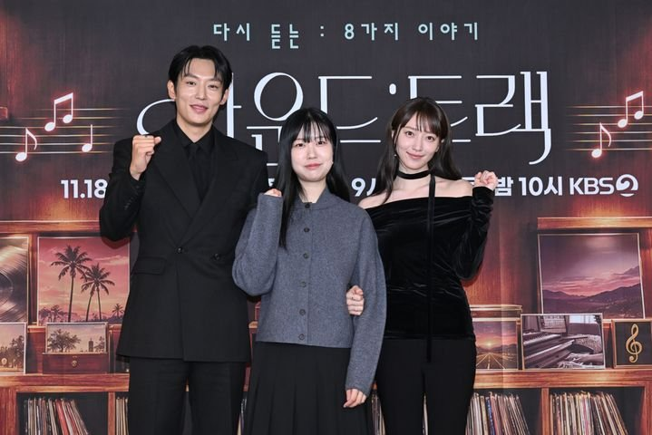
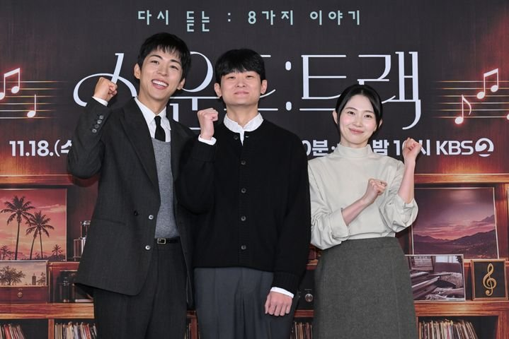
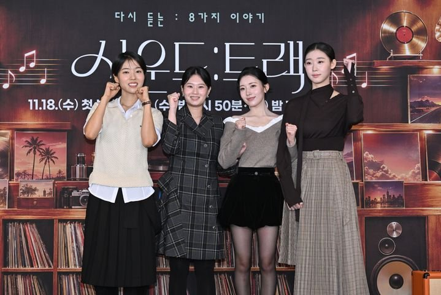

누구나 한 곡쯤은 어떤 시절과 묶여 있는 노래가 있죠. KBS 단막극 '드라마 스페셜 2026 사운드:트랙'은 그런 노래 한 곡씩을 출발점으로 삼아 단막극 여덟 편을 만들었어요. 18일 첫 방송을 시작했어요. 언제 하는지, 편마다 누가 나오는지 순서대로 볼게요.
📷 사진 1 자리
▲ 18일 열린 'KBS 드라마 스페셜 2026 사운드:트랙' 제작발표회 · 사진=KBS 제공
수요일 9시 50분, 목요일 10시 KBS2
방송은 KBS2에서 매주 수요일 밤 9시 50분, 목요일 밤 10시예요. 일주일에 두 편씩, 모두 여덟 편이 차례로 나가요.
한 편이 한 이야기로 끝나는 단막극이라 중간 편부터 봐도 따라가기 어렵지 않아요. 놓친 편이 있어도 다음 편과 이어지지 않으니 부담이 적어요.
📷 사진 2 자리
▲ '사운드:트랙' 제작발표회, 뒤 배경판에 첫 방송 일정 · 사진=KBS 제공
지금까지 공개된 네 편
첫 편 '봄 내음보다 너를'은 반려묘 하루를 떠나보낸 싱어송라이터 김나은(우다비)의 이야기예요. 밴드 보컬을 꿈꾸는 잡화점 주인으로 나오는 강애심은 극 중 노래를 직접 불렀어요. 김현진이 카메라 가게 아르바이트생 구준영으로 함께해요.
'연극이 끝난 후'는 시사 프로그램만 하던 PD 나혜미(표예진)가 폐지 직전의 어린이 프로그램으로 발령받으며 시작해요. 연출을 맡은 김한슬 감독은 두 배우의 호흡을 시청 포인트로 꼽았어요.
📷 사진 3 자리
▲ '사운드:트랙' 제작발표회 · 사진=KBS 제공
'나의 외로움이 널 부를 때'는 장필순의 노래에서 출발한 미스터리예요. 박유림과 주종혁이 주연이고 인물의 정체를 따라가는 전개라고 김규현 감독이 소개했어요.
📷 사진 4 자리
▲ '사운드:트랙' 제작발표회 · 사진=KBS 제공
'바이, 썸머'는 아이유의 같은 제목 노래로 만든 청춘물이에요. 서수빈, 한예지, 정다빈이 열아홉 살부터 스물아홉 살까지 10년 동안 꿈과 사랑을 좇는 친구들로 나와요.
▶ 영상 1 자리
나머지 네 편의 제목과 출연진은 아직 기사로 자세히 나오지 않았어요.
42년 된 KBS 단막극이 바꾼 것
KBS 단막극은 1984년 '드라마게임'에서 시작해 42년째 이어지고 있어요. 이번 시즌은 처음부터 '노래'라는 공통 재료를 정해 두고 여덟 편을 묶었다는 점이 달라요.
📷 사진 5 자리
▲ '사운드:트랙' 제작발표회 · 사진=KBS 제공
단막극은 신인 감독이 데뷔하는 자리이기도 해요. 제작발표회에서 감독들은 OTT 작품과 견주어도 손색없는 작품을 만들고 싶었다고 입을 모았어요.
▶ 영상 2 자리
어떤 편부터 볼까
'사운드:트랙'은 익숙한 노래를 한 편의 이야기로 풀어낸 옴니버스 단막극이에요. 노래를 먼저 떠올리고 그 노래와 어울리는 이야기를 찾아보는 재미가 있어요.
볼거리는 편마다 결이 확 다르다는 점이에요. 반려동물과의 이별, 직장 성장담, 미스터리, 청춘물까지 한 시즌 안에 섞여 있어요.
원곡을 아는 사람이라면 그 노래가 어떤 장면에 흐를지 기다리는 맛이 있어요. 짧게 끝나는 드라마를 찾는 분께도 맞아요.
네 편 가운데 원곡 인지도가 가장 높은 건 아이유의 '바이, 썸머'라서 입문용으로는 그 편이 무난해 보여요. 반대로 장필순 노래로 미스터리를 만든 '나의 외로움이 널 부를 때'는 노래와 장르의 조합이 가장 의외라 더 궁금해지는 편이에요.
'사운드:트랙'은 매주 수요일 밤 9시 50분, 목요일 밤 10시 KBS2에서 방송해요.
함께 보면 좋은 이슈




